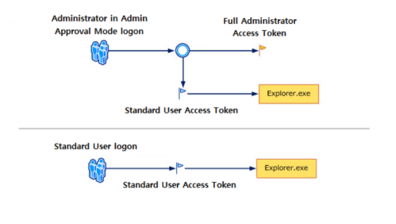
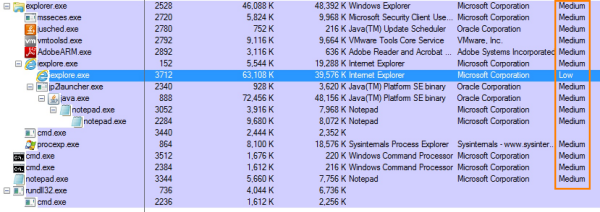

9. Access Tokens (UAC)
UAC is a security
component on Windows that allows users to perform common tasks as non-administrators or as administrators without
having to switch users, log off, or use Run As.
• When an
Administrator logon, two separate
access tokens are created for the user:
◇
standard user(primary)
access token Used to start a program that does not require administrative privileges, such as the web
browser or e-mail programs.
◇
administrator(impersonation) access
token.
Used for programs that do require administrative privileges, such as programs that make
modifications to the system. In this case the system prompts the user for approval to execute the program as
administrator.
*It does not to be necessarily a token with Administrator privileges but can impersonate any
user
• When a
Standard User logon, a single access token is created for the user:
◇
standard user(primary) access token Used to start a program
that does not require administrative privileges, such as the web browser or e-mail programs.
◇ when the
Standard User need to perform an Administrative task,
UAC ask him to provide the
credentials of an Administrator account.
Administrator/Standard user logon
How to exploit it
•
Token Duplication Windows allows
processes/threads to duplicate their access tokens.
An impersonation access token can be duplicated into a
primary access token this way.
If we can inject into a process, we can use this functionality to duplicate the
access token of the process, and spawn a separate process with the same privileges.
•
Named Pipes A process can create a named pipe, and other processes
can open the named pipe to read or write data from/to it.
The process which created the named pipe can
impersonate the security context of a process which connects to the named pipe.
Process Integrity
In Windows Vista and later, processes run at three different levels of integrity:
◇ High (1) →
A high integrity process has administrator rights
◇ Medium (0) → A medium integrity process is one that runs
with standard user rights
◇ Low → A low integrity process is very restricted. It can not write to the registry
and it’s limited from writing to most locations in the current user’s profile
To check via GUI the integrity of
the processes running we can use
Process
Explorer 
UAC Levels
To perform a privileged action request the high integrity
level. If the user is an administrator, what happens next will depend on their UAC settings.
•
Windows Vista there are two options:
◇ UAC on
◇ UAC off
• Windows 7, 8, 10, there are four
options:
◇
High Always notify. the user is notified
before changes that require administrative permissions are performed.
◇
Medium(Default) ▪ UAC only notify when programs/apps try to make
changes to the computer. When UAC prompt is shown the screen is dimmed.
▪ not UAC notified when user manually
makes changes.
Security Impact: malicious programs can be created to
simulate the keystrokes or mouse movements made by a user and change Windows settings.
◇
Low Similar to the medium level, but:
▪ Screen is not dimmed
at the UAC prompt notify, when programs/apps try to make changes to the computer
▪ programs can interfere with
the UAC prompt
Security Impact: malicious programs can simulate keystrokes
or mouse moves that interfere with the UAC prompt.
◇
Never
Notify UAC is turned off and it never notify when an app is trying to install or make System
changes.
Security Impact: With UAC turned off, for malicious programs is
much easier to infect your computer and take control
Bibliography:
•
https://blog.cobaltstrike.com/2014/03/20/user-account-control-what-penetration-testers-should-know/#:~:text=In%20Windows%20Vista%20and%20later,integrity%20process%20is%20very%20restricted.